The reply composer reached global comments, and stopped there.
Same fixture, light theme, and interaction, at the frozen pull-request base and head. The reference is the normal Inbox reply, which already attached a file and showed a dictation mic. Global comments on Markdown, guided review, and code review now use that composer. HTML global, selections, line comments, image comments, and question answers do not.
Before 72b00e0dd6b9a5a6f87139ff9b0161eeac1ad0e5 After b73a7c306c5ed9a2a89848485ac7a6ff05014d8f
Staging holds.
On the after build, Add on a Markdown global comment kept paste.png in the comments list, and Send wrote the file into the stored reply. On the before build the same Add and Send wrote the sentence only. The mic in these pictures is disabled: voice was on, no API key was configured, and no recording or transcription ran.
Markdown global comment
Wide layout. Empty composition first, then the file in the field, then what Send stored.
BeforeText area and Add. No paperclip, no microphone.AfterPaperclip, disabled dictation mic, and the API-key note.
BeforeNo inbox attach control, so the file cannot be staged.
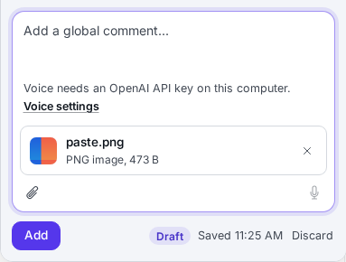
Afterpaste.png attached through the file input. Clipboard paste was not used.
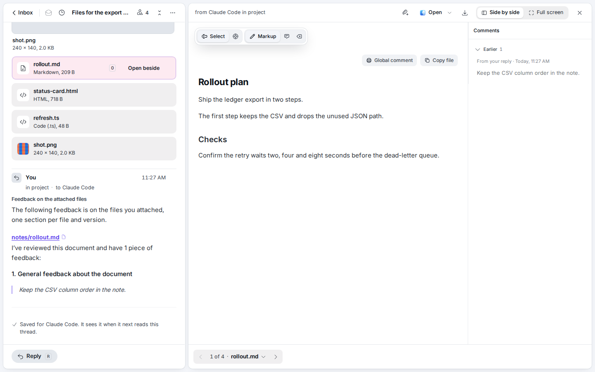
Before · after SendThe reply contains the sentence and no file line.
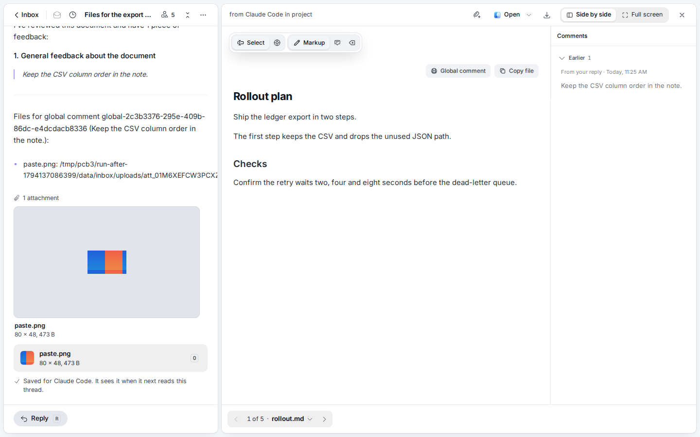
After · after SendThe reply lists paste.png and shows the image preview.
Narrow Markdown global comment
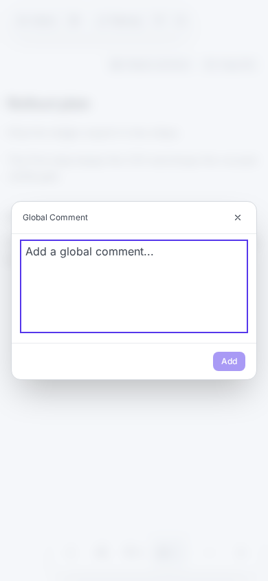
Before · 390pxSheet with a textarea and Add.
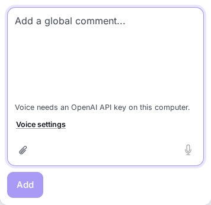
After · 390pxSame composer: paperclip and blocked mic.
Guided review and code review
The header global comment changed. A line comment, opened by dragging a changed line, did not.
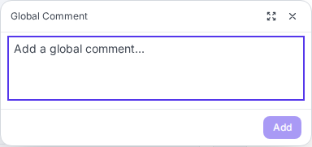
Before · guide globalAdd only.
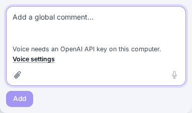
After · guide globalPaperclip and blocked mic. The file tile is in guide-global-media-after.png.
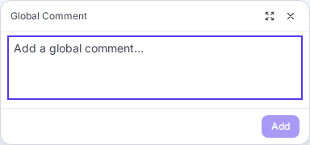
Before · review globalAdd only.
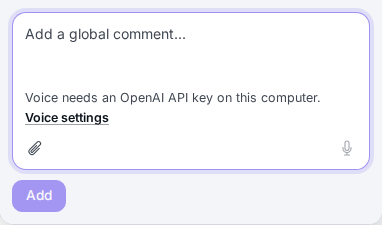
After · review globalSame composer as the guide.
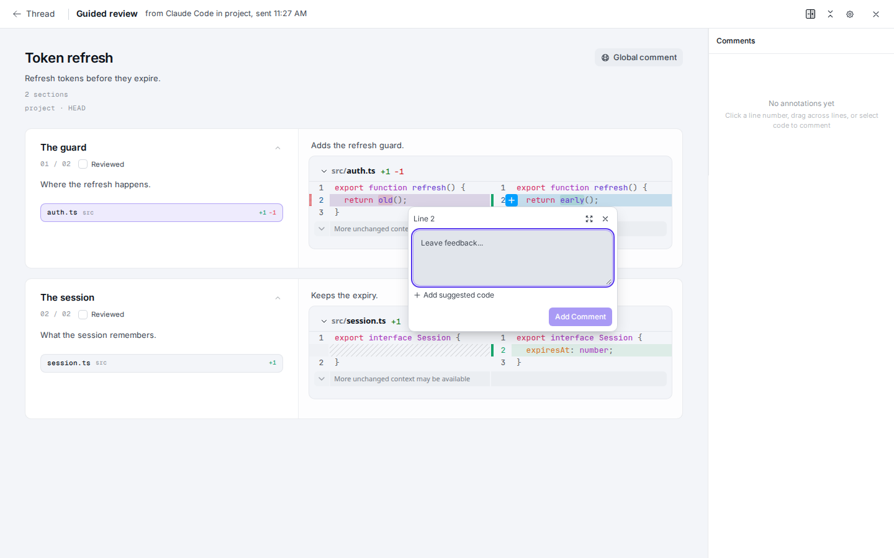
Before · guide line"Leave feedback…", suggested code, Add Comment.After · guide lineUnchanged. No paperclip and no mic. The review line matches it.
HTML document
The status card is a real HTML attachment. Neither revision shows a Global comment button. Selecting the paragraph opens the old comment popover on both.
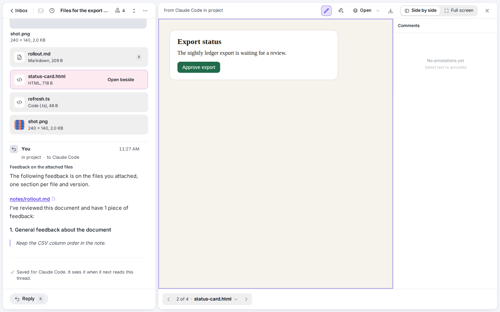
BeforeDocument open. Comments panel says to select text. No global control.
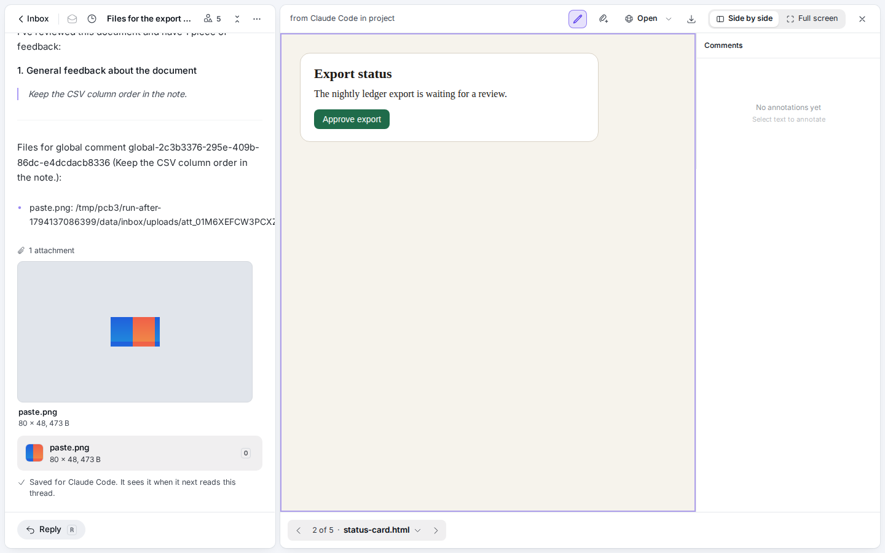
AfterStill no opener. The provider is mounted and the button is hidden.
Before · selection"Add a comment…", a small image button, Save. No mic.
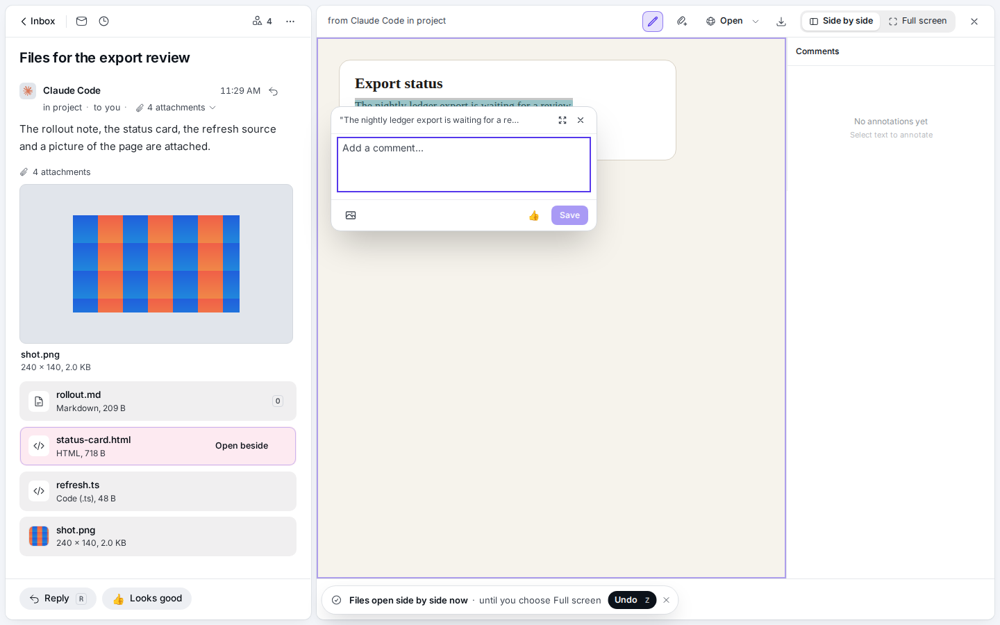
After · selectionUnchanged. The image button is the old popover, not inbox upload.
Before · 390pxBack, pen, comments, pager, more. No global comment.
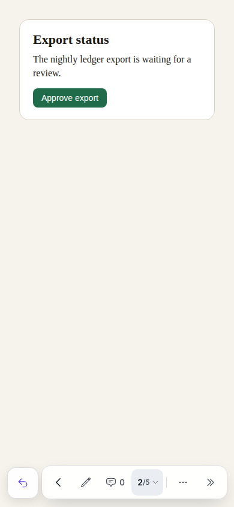
After · 390pxSame toolbar. The gap is still there.
Other free-text fields that stayed plain
Before · Markdown selectionAdd a comment, Save.
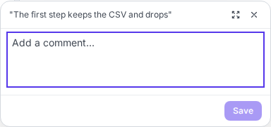
After · Markdown selectionUnchanged. Message selection matches it.
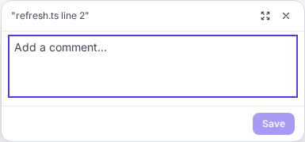
Before · code lineAdd a comment, Save. No files.After · code lineUnchanged.
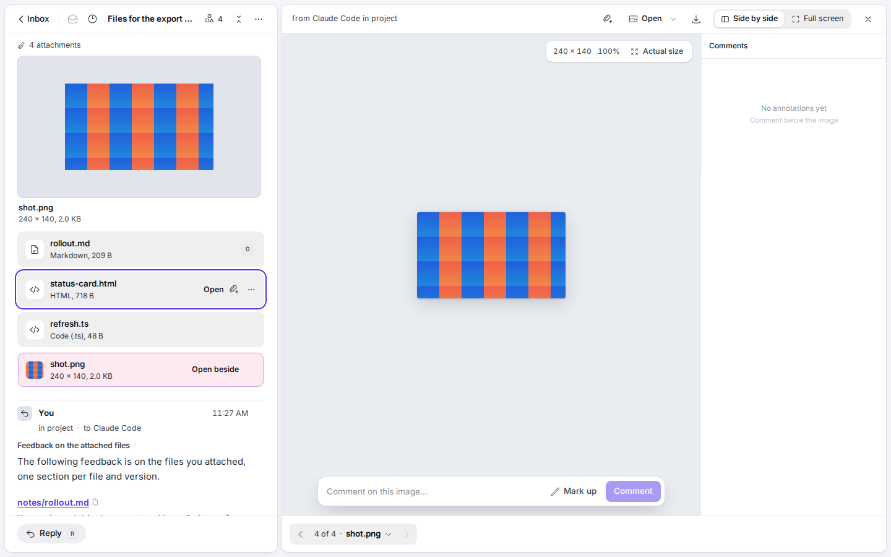
Before · image"Comment on this image…", Mark up, Comment.
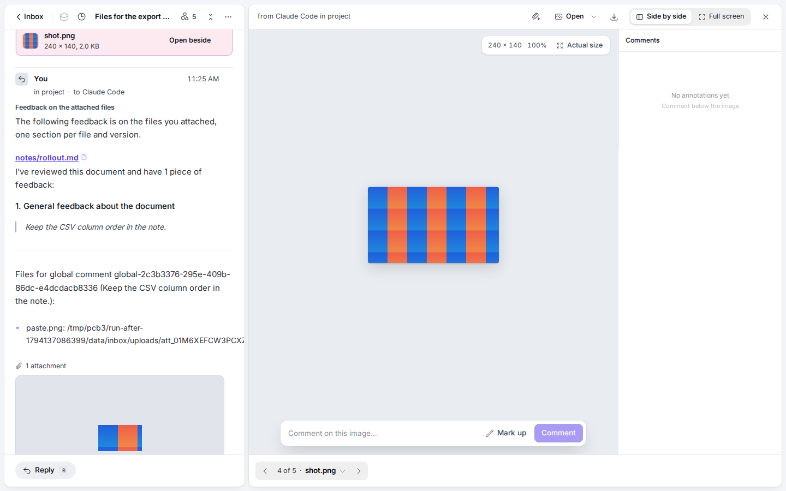
After · imageUnchanged, including the 390px shot.
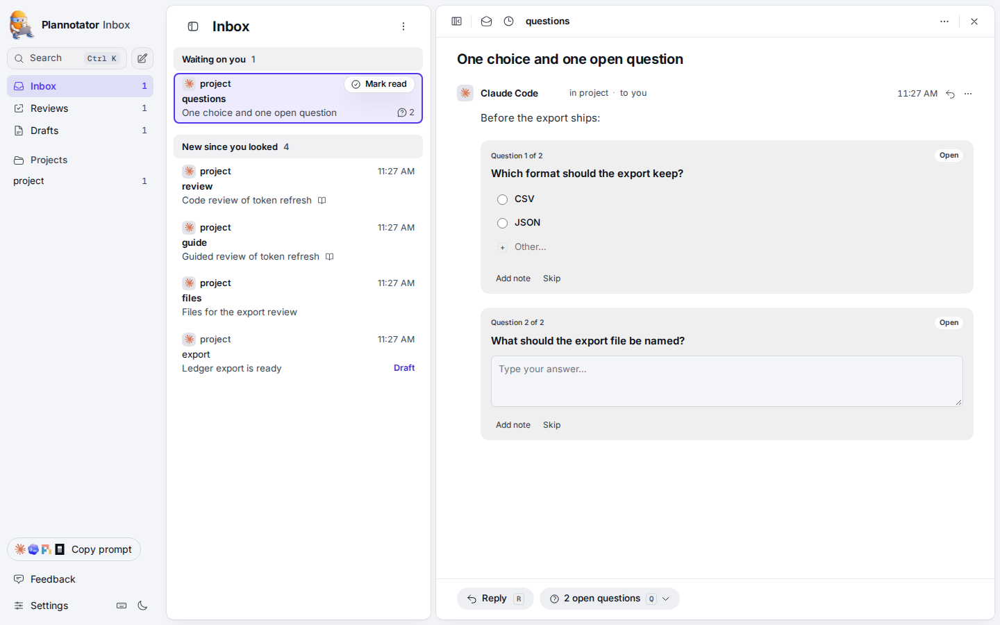
Before · questionsChoice radios are not a composer. The open question is a plain answer box.After · questionsUnchanged. No mic on the answer.
Reference: the thread reply already had the composer
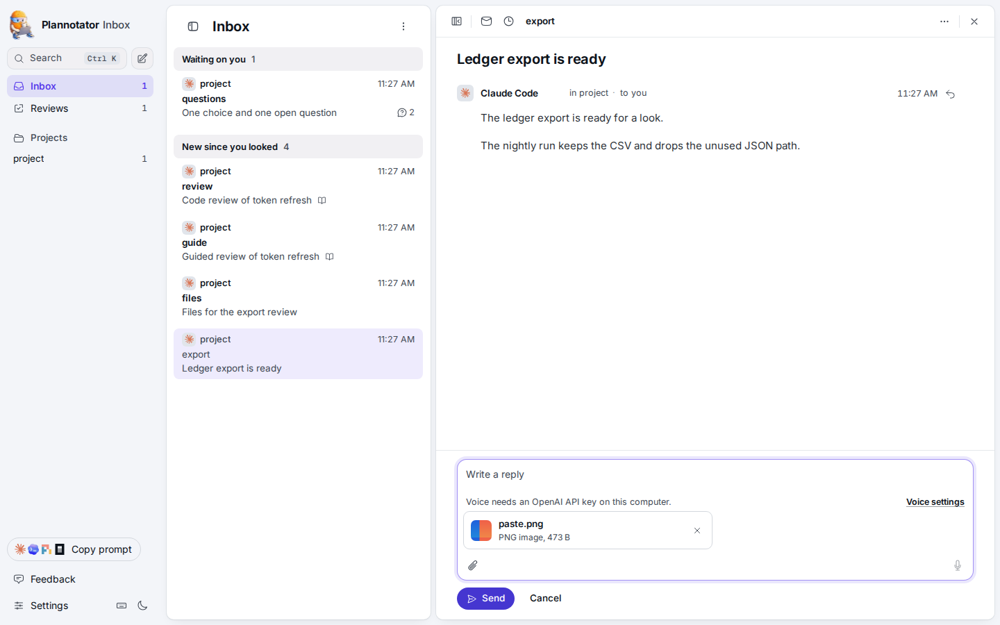
Beforepaste.png on the normal reply, with the blocked mic.AfterThe reply composer is unchanged. Draft restore is in thread-reply-draft-*.png.
Short matrix
Surface
Before
After
File survives Send
Thread reply
Full composer
Full composer
Already true; draft restore checked
Markdown, guide, and review global
Text and Add
Full composer
Checked on Markdown
HTML global
No button
No button
No composer to send
Selections, line comments, image notes, free-text question
Plain text
Plain text
Not the new path
Full notes, the frozen SHAs, and the exercised / simulated / untested list are in REPORT.md.